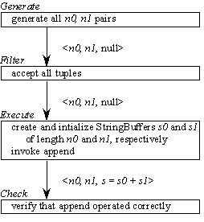
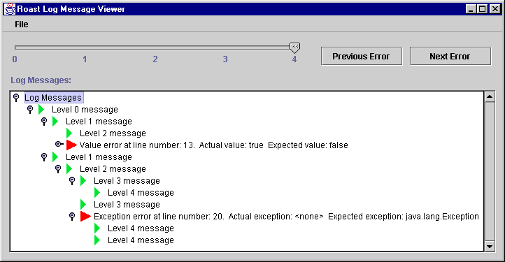
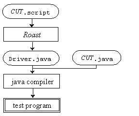

Roast Reference Manual |
Roast is implemented as a Perl preprocessor plus a variety of Java abstract and concrete classes. Roast templates provide macro-like support for recurring test patterns. The Roast framework is based on a set of four unit operations: generate, filter, execute and check. Each unit operation is implemented as an abstract class. The unit operations communicate via test tuples, each of which is an abstraction of a concrete test case. Roast provides methods for tuple generation, based on generalizations of cartesian product.
Because test drivers frequently produce large log files, Roast provides support for log message generation, filtering and viewing.
Roast is invoked from the Unix command line. Support is provided for a variety of standard roast arguments and for custom arguments used in a particular.
This section uses the running example shown in Templates.script. Some of the test cases are intentionally flawed, to illustrate how Roast reports failures. The file Templates.out contains the complete output of the driver.
Syntax 1:
#valueCheck actVal # expVal [# valueType] #end
where actVal and expVal are Java expressions of comparable types.
From this case, Roast generates code to compare actVal and expVal, while monitoring exception behavior. The generated code prints an error message if actVal and expVal are not equal or if an exception is thrown during the comparison.
Syntax 2:
#valueCheck actVal #option id1 # expVal1 [#option id2 # expVal2 ... #option idN # expValN ] #end
where actVal and expVal are Java expressions of comparable types.
From this case, Roast generates code to compare actVal and expVal, while monitoring exception behavior. A trace option is set when the corresponding actVal and expVal values are equal. Subsequent checks generate an error message if actVal and expVal are not equal for the set option, or if an exception is thrown during the comparison.
In Templates.script are 8 value-checking templates. At the start, string s is created with initial value "abc". Case V1 checks that s has length 3. Case V2 checks, incorrectly, that s has length 0; this case will generate an error message. Case V1 checks that s has value "abc".
If expVal and actVal are of type
Object, String, boolean, char byte, short, int, long, float, doublethen they are compared in the obvious way, using code provided by Roast. For other types, the tester can provide custom comparison routines. This is done by extending the ValueType class and implementing the compareValue and printValue methods. In Templates.script, the class CIString implements case-insensitive comparison of strings. Case V4 compares s to "abc", using the builtin comparison whereas V5 uses the CIString code. Case V6 fails (intentionally) because s contains "abc" not "aBc". Case V7 uses the CIString comparison and passes. Finally, case V8 shows what happens when an exception is thrown during the evaluation of expVal or actVal.
Note: when a value check template fails, expVal and actVal are evaluated twice: once for comparison and again while generating the error message. This can cause problems if they have side-effects.
#excMonitor action # expExc [# exceptionType] #end
where action is a Java code fragment, expExc is an object whose type is a subclass of Throwable, and exceptionType is a subclass of ExceptionType.
From this template, Roast generates code to execute action while monitoring exception behavior. The generated code prints an error message if expExc is not thrown or if another exception is thrown. If expExc is omitted, then an error message is generated if any exception is thrown.
In Templates.script are 6 exception-monitoring templates. Test case E1 requests a character at a legal position in s; no exception is expected. Test case E2 intentionally requests a character at an illegal position. Since an exception will be thrown and no expected exception field was specified, an error message will be generated. In cases E3 and E4, the same method calls are made, but an expected exception is specified.
In an exception-monitoring template, if the exceptionType field is omitted, then comparision is done based on the class of the exception objects. Two exception objects are considered equal if they have exactly the same type. For other types, the tester can provide custom comparison routines. This is done by extending the ExceptionType class and implementing the compareException and printException methods. In Templates.script, the class MyExcCompare implements custom comparison of exceptions of type E. In case E5, two E objects are found to be equal, using the default comparison based only on object type. In case E6, the two E objects are found to be unequal, because the custom comparison checks the value of the field x in class E.
Similar to table-driven programming, each tuple can be viewed as a table row and each tuple element can be viewed as a table column. In tuple testing, each tuple (row) is processed one at a time and is an independent, abstract representation of a test case. If the number of test tuples is large, then this approach yields a shorter and simpler test driver.
Tuple testing supports pipe-style test drivers. Using a simple tuple interface, streams of test tuples can be piped between different driver operations. This uncouples the operations and makes them easier to reuse in other drivers.
The AbstractTuple class is extended to add these three elements.

Figure 1: Unit Operations in AppendUnitOp
The four unit operations used in AppendUnitOp are as follows:
The driver class contains a straightforward main method. The main method initializes the fill pattern, passes the command-line arguments to the framework then starts the framework with a call to its static startUnitOps method. This method takes an instance of each of the unit operations and does not return until all the tuples in the tuple set have been generated, filtered, executed, and checked.
The driver Generate.java demonstrates the tuple generation operations; The driver output is Generate.out
The driver Generate.java begins by creating two domains, alphaDomain and intervalDomain, and loading them into domainVector. Then domainVector is passed to the CPIterator constructor and each element in the iterator is retrieved.
The driver AppendCP.java shows the use of CPIterator in the Generate unit operation.
The driver Generate.java passes the domainVector containing alphaDomain and intervalDomain to the BdyIterator constructor with k set to 1 and then each element in the iterator is retrieved. Next the same procedure is followed with k set to 2.
The driver AppendBdy.java shows the use of BdyIterator in the Generate unit operation.
With a dependent domain, we take a vector of n-tuples and a single domain, and generate (n+1)-tuples, by extending each n-tuple with a different element from the domain. We call the n-tuple the base tuple and the domain a dependent domain, because the elements used to extend a base tuple are recalculated for each base tuple.
To facilitate the generation of dependent domains, Roast provides the Factory interface and the ExtendIterator class. The Factory interface provides a single method, {\tt create}, which takes a vector and returns an iterator. The ExtendIterator constructor takes two arguments: an iterator i, which generates the base tuples, and a factory f, which for each tuple t generated by i, creates an iterator i' that generates the elements from the dependent domain that extend t.
The driver Generate.java shows how to generate length/index pairs using Factory and ExtendIterator. The length values are generated using IntervalDomain and the DomainIterator class, an adapter that converts a Domain to an Iterator. The IndexIterator class generates an iterator containing a pair of index values for the length value passed to its constructor.
The driver SubstrCP.script shows how to test the substr method of StringBuffer using CPIterator. The driver is inefficient in that many of the generated tuples are discarded by Filter, because the start/end values are out of range. The driver SubstrDD.script overcomes these problems by using Factory and ExtendIterator to generate only the legal values.
There are two types of Roast log messages: failure messages (logged by Roast when a test case fails) and utility messages (logged by the tester).
By default, Roast log messages are output to the command line. Using Roast command line parameters, log messages can be directed to a log file, either as plain text or serialized log message objects. The format for log message output to the command line and to plain text log files is identical. Figure 2 shows the messages output from LogMessageDemo, run with a command line message level of 4. Each message is indented with n tabs, where n is the message's level. A message level of zero means the message is left justified against the left margin. The two failure messages are logged by the failed #valueCheck and #excMonitor test case templates. Similarly, Figure 3 shows messages output from LogMessageDemo, run with a command line message level of 0.
Level 0 message Level 1 message Level 2 message Value error at line number: 13. Actual value: true Expected value: false Level 3 message Level 1 message Level 2 message Level 3 message Level 4 message Level 3 message Exception error at line number: 20. Actual exception: <none> Expected exception: java.lang.Exception Level 4 message Level 4 messageFigure 2: Levels 0 through 4 LogMessageDemo messages output to the command line
Level 0 message Value error at line number: 13. Actual value: true Expected value: false Exception error at line number: 20. Actual exception: <none> Expected exception: java.lang.ExceptionFigure 3: Level 0 LogMessageDemo messages output to the command line
The Roast Log Message Viewer, a graphical user interface (GUI) application, allows variable amounts of message detail to be viewed. The application loads and displays serialized log messages. As shown in Figure 4, this application displays messages using a tree. In this horizontal tree layout, a message is inserted in the tree at the height indicated by its message level. Higher-level messages are nested to the right of lower level messages. Failure messages, however, appear at the same level as the previously logged message. The application allows us to search for failure messages and selectively expand and collapse log messages.

Figure 4: Roast Log Message Viewer application
Figure 4 shows all messages expanded. A failure message is indicated by a red triangle to the left of the message text and a utility message is indicated by a smaller green triangle. The slider control along the top of the application allows us to expand all messages with levels less than or equal to the selected slider value; the rest are collapsed. Starting from the currently selected message, the Previous Error and Next Error buttons select the previous or next failure message, expanding messages as necessary. File menu items allow serialized log files to be loaded and the application to be shutdown.
In the Roast flowchart shown in Figure 5, ovals indicate human-readable files and boxes indicate executable programs. The tester writes a test script for the code under test (CUT) in the file CUT.script. The test script contains Roast test case templates embedded in Java code. Roast processes this script and generates a Java program in Driver.java. The driver and the CUT are then compiled. When the resulting test program is executed, the test cases in the test script are run against the implementation and any errors are logged.

Figure 5: Roast system flowchart
The Roast parseArgs method parses the command-line arguments. The CommandLineDemo.java demonstrates how to specify your own, custom command-line arguments to supplement those specified by Roast. Briefly, you specify your custom flags with FlagSpec objects and then pass them in an array to the parseArgs method.
To convert CUT.script into Driver.java, execute the command:
roast < CUT.script > Driver.java
To compile the resulting driver, execute the command:
javac Driver.java
To run the driver, execute the command:
java Driver [command line options]
To run the Roast Log Message Viewer, execute the command:
java roast.viewer.LogViewer [serialized message file]